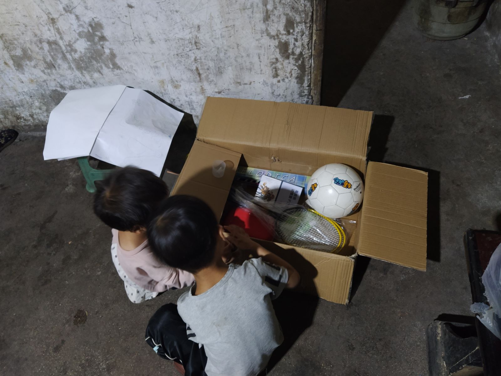
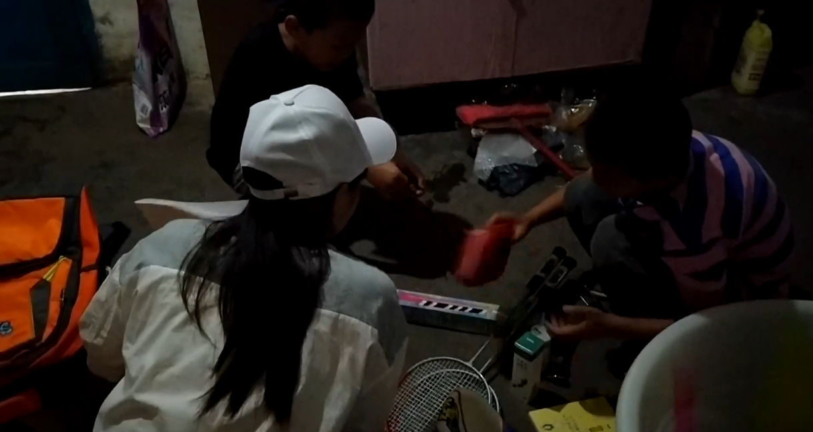
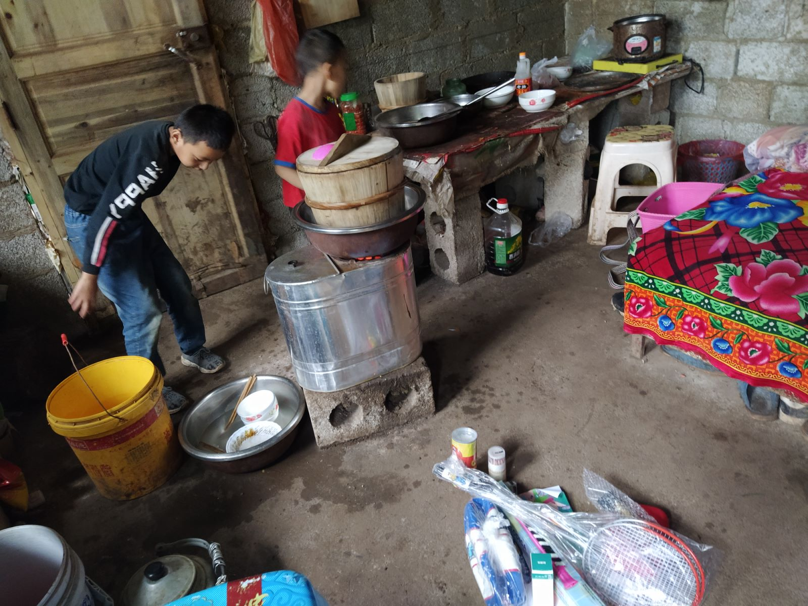
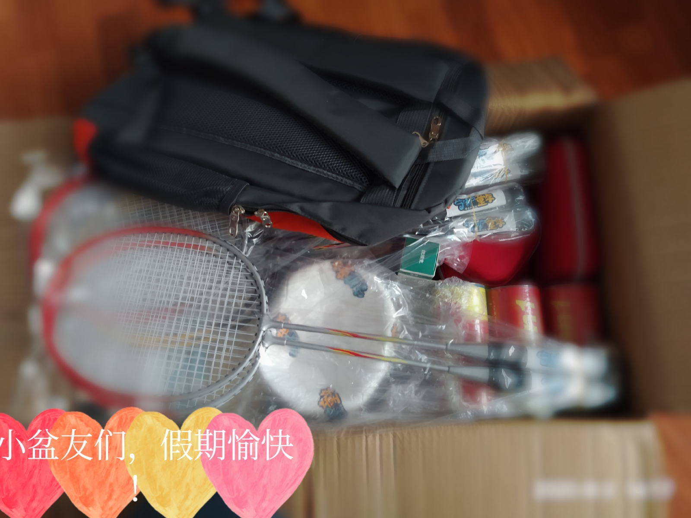

有这样一群孩子——他们本可以在父母的怀抱里，享受美好的童年，却由于父母常年在外打拼，或因各种原因，让孩子留守于老家由老人照看，成为“留守儿童”。留守儿童是一个特殊群体，他们远离父母亲，他们更渴望得到一份原始的亲情的温暖。
俩兄妹
陈启勋、陈紫涵是俩兄妹，陈启勋五岁，上幼儿园大班，陈紫涵三岁，未上学，爸爸妈妈出去打工了，他们和奶奶和小姑住在一起，小姑今年考上了大学，奶奶很高兴。奶奶还很好客，见我们来还特意去买咸蛋、煮稀饭给我们吃。陈启勋有点腼腆，紫涵外向点。他俩比较喜欢画画，启勋不咋喜欢钢琴，启勋想当官，出人头地，成长中理想是多变的，希望随着年龄的增长他能很快定位自己的方向。
定国定邦:
蔡定国，蔡定邦两双胞胎兄弟，定国是哥哥，定邦是弟弟，今年12岁，上五年级。兄弟俩平时喜欢打球，看到这次给的篮球和羽毛球可开心了。不过兄弟俩还是最喜欢打乒乓球，是哥哥教弟弟打的乒乓球，他俩打球时哥哥经常赖弟弟的球(占便宜，耍赖)。弟弟的理想是长大做一名优秀的军人，保护国家。哥哥的理想是做一名游戏主播，做自己喜欢的事。他们的父母出去打工，爸爸妈妈只是初中毕业，文化水平不高，工资也不多，爷爷奶奶也出门打工了，幺爸(小姑)和他们生活在一起，照顾他们，关心他们的学业。

俩兄弟
戴清扬今年10岁，上四年级，父母多年外出打工，从小住在外婆家，外婆终年劳碌，养了几头猪，以此为生。外婆经常到山上去割猪草，难免会割破手指，我们送去的医疗包对她有极大的帮助。清扬一直比较喜欢篮球和钢琴，但是外婆一直没钱给他买个篮球，看到篮球他可开心了。他的理想是做个发明家。希望他能一直向前，不忘初心，实现梦想。
祝福语
或许我们年少轻狂，一路上纵情欢歌;或许我们涉世未深，一张张青春的面庞写满向往;或许我们胸怀信念，一双双眼眸深处洋溢虔诚;我们忘记了一路颠簸的辛苦，在我们的眼里，没有小山村荒凉的景象，没有人烟稀少的孤寂感!我们拥有的是年少的轻狂，激昂的斗志和热血的情怀.还未来得及酝酿好心情，我们已踏上那片青土地。经过半个多小时的颠簸，汽车终于把我们带到了目的地一个美丽的小山村。初步走访，我们了解到当地的一些主要情况。希望全天下的小朋友都能多货的一些关爱，拥有一个欢乐的童年！
